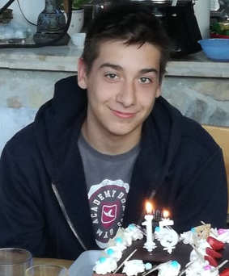

Mikola Bence Weboldala
Kezdőlap
 Mikola Bence vagyok 16 éves Monor városban lakom. Pataky István Híradás Ipari és Informatikai szakgimnáziumba járok ami 30km-re van Monortól ezért 1 óra a bejárási idő, előtte a Monor Ady Úti Általános Iskolába jártam. Általános tevékynségem suli időben tanulás és utánna videójátékozás vagy sportolás. További oldalakon a gomb megnyomásával lehet olvasni Rólam, a Hobbimról és Szabad idős tevékenységeimről.
Sport Szabad idő Rólam